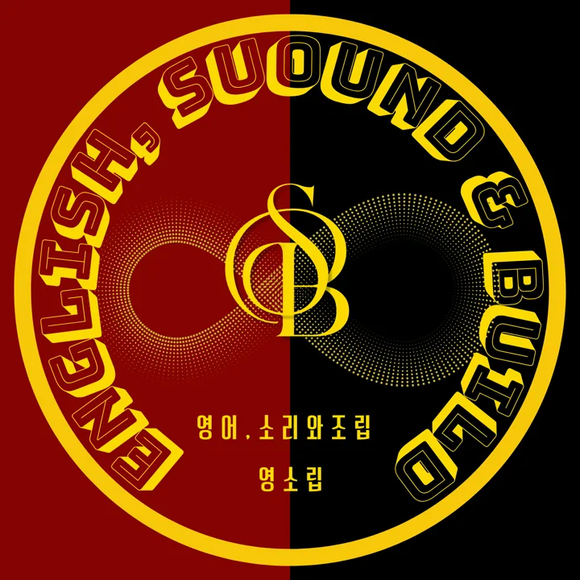

Sound.
영어의 소리
철자가 아니라 소리의 단위로 영어를 만납니다. 강세와 리듬, 덩어리로 끊어 듣고 말합니다.
- 강세 · 약모음 · 연음
- 숨 단위 끊어 읽기
- 쉐도잉 루틴
English, Sound & Build
아무리 긴 문장도 1차 · 2차 · 3차 정보가 층층이 붙어 있을 뿐입니다. 소리로 덩어리를 듣고, 정보의 계단으로 문장을 조립하는 영소립 강의입니다.

Two pillars
들리지 않으면 읽을 수 없고, 구조가 보이지 않으면 말할 수 없습니다. 영소립은 두 가지를 함께 훈련합니다.
Sound.
철자가 아니라 소리의 단위로 영어를 만납니다. 강세와 리듬, 덩어리로 끊어 듣고 말합니다.
Build.
명사와 형용사에 설명이 붙는 방법은 정해져 있습니다. 조립도처럼 딱 떨어지게, 정보의 위계대로 붙여 나갑니다.
Layers of information
단계 카드를 누르면 그 단계까지의 정보만 또렷하게 남습니다. 1차만 고르면 문장의 뼈대가 보입니다.
Roadmap
입문부터 차근차근. 수준에 맞는 강의부터 시작하세요.
How it works
강의 영상으로 소리와 구조의 원리를 배웁니다.
문장에 기호를 쳐서 1차 · 2차 · 3차 정보로 나눕니다.
나눈 정보를 계단으로 다시 쌓고 직독직해합니다.
정보 단계대로 끊어 소리 내어 읽습니다.